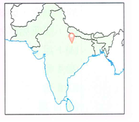
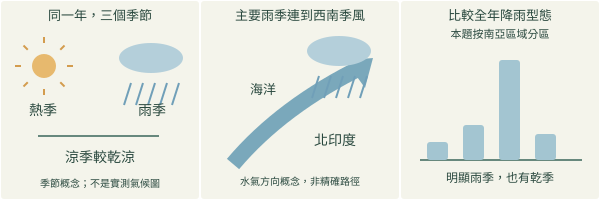
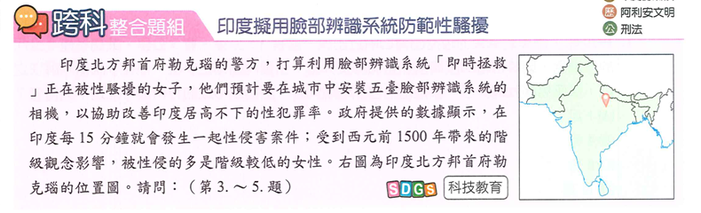
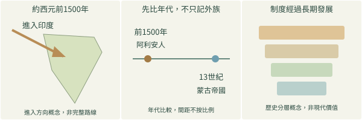
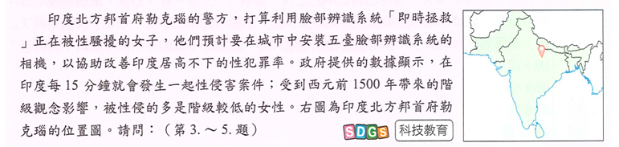
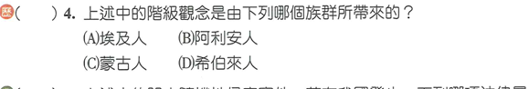

完整原題
作答所需文章／材料
印度擬用臉部辨識系統防範性騷擾 印度北方邦首府勒克瑙的警方，打算利用臉部辨識系統「即時拯救」正在被性騷擾的女子，他們預計要在城市中安裝五臺臉部辨識系統的相機，以協助改善印度居高不下的性犯罪率。政府提供的數據顯示，在印度每15分鐘就會發生一起性侵害案件；受到西元前1500年帶來的階級觀念影響，被性侵的多是階級較低的女性。右圖為印度北方邦首府勒克瑙的位置圖。請問：（第3.～5.題）
地理第3題｜勒克瑙氣候判讀
歷史第4題｜印度階級觀念的歷史線索
先想一想，再查看答案、解說與原圖
地理第3題｜勒克瑙氣候判讀
分享原卷｜第3題 · 首次出題日期 2026-10-29 · 原AI對話 ↗
逐項解析
| 選項與原句 | 判讀 | 句意與判斷理由 |
|---|---|---|
| (A) 熱帶季風氣候 | 應選 | 按本題南亞區域分區與指定位置，A為預期答案。 |
| (B) 熱帶沙漠氣候 | 不選 | 不符當地明顯的季風雨季。 |
| (C) 熱帶雨林氣候 | 不選 | 當地有明顯乾季，不是全年多雨的雨林型。 |
| (D) 熱帶莽原氣候 | 不選 | 原卷是莽原，並非東北季風；本題區域與位置採A，不能只憑乾濕季否定D。 |
詳細說明與解題步驟
本題按南亞的區域氣候分區，勒克瑙受西南季風影響、降雨集中於雨季，四個選項以A最符合。北方邦政府以熱帶季風型概括全邦；這裡採原題的區域氣候分區用語，配合指定位置作四選一，不把所有印度地區都當同一種氣候。B的全年乾旱與C的全年多雨不合；D原卷是「熱帶莽原」，莽原也有乾濕季，不能僅靠「有乾季、有雨季」就排除它，還要回到本題指定位置和區域分區。來源AI把D誤抄成「熱帶東北季風」，其後對D的分析不採用；本稿保留原D、維持A。

① 看全年，不只抓單一風名
當地雨季較濕、熱季乾熱、涼季較乾涼；季節圖是概念示意，沒有新增測站溫度、雨量或精確月份數值。
② 主要夏雨，連到西南季風
勒克瑙位於北印度，主要降雨與夏季西南季風相關。本題採南亞區域分區，四個選項以A熱帶季風型最符合。
③ D是莽原，不是東北季風
原AI把D抄成東北季風，但原卷是熱帶莽原。莽原也有乾濕季，不能只憑這點排除；仍須結合指定位置和本題區域分區。
④ 全年季節配合位置，選本題的季風型
答案 A：熱帶季風氣候
- 保留原卷D：熱帶莽原氣候。
- 位置與本題區域分區一起判斷。
- 不能用錯抄的選項，或僅用乾濕季作唯一判準。
核對註記：已實看本題原卷、完整選項及必要附圖；首次日期採原使用者本次對話日期，不冒稱實際考試日。
原圖（僅本題）

歷史第4題｜印度階級觀念的歷史線索
分享原卷｜第4題 · 首次出題日期 2026-10-29 · 原AI對話 ↗
逐項解析
| 選項與原句 | 判讀 | 句意與判斷理由 |
|---|---|---|
| (A) 埃及人 | 不選 | 古埃及主要聯繫尼羅河文明，非本題所述歷史事件。 |
| (B) 阿利安人 | 應選 | 年代、印度地區與社會階層脈絡均吻合。 |
| (C) 蒙古人 | 不選 | 蒙古帝國擴張遠晚於約西元前1500年。 |
| (D) 希伯來人 | 不選 | 主要聯繫西亞與猶太教等歷史脈絡，不是本題事件。 |
詳細說明與解題步驟
以題文的印度、約西元前1500年、階級觀念三條線索判斷，對應阿利安人進入印度及種姓制度逐步形成的課程脈絡，選B。制度是長期發展的結果，不是單一族群在某一年憑空完成。蒙古帝國擴張在西元13世紀，與本題年代差距極大；埃及人與希伯來人的主要歷史脈絡也不合印度此事。這是在辨識古代制度背景，不肯定階級歧視，亦不把原新聞中的受害者統計當作今日全部印度人的狀況。

① 地區與年代要同時對上
題文是印度、約西元前1500年及階級觀念，對應阿利安人進入印度的課程脈絡。小圖只表進入方向，不假造完整遷移路線。
② 蒙古帝國，年代晚得多
蒙古帝國常見於西元13世紀，遠晚於本題。時間線只比較先後與時代差異，圖上距離不表示等比例年數。
③ 制度逐步形成，不是一年完成
阿利安人的進入與後來種姓制度形成相關，制度經過長期發展；這是理解古代社會分層，不肯定階級歧視或套用到每個現代人。
④ 印度、前1500年，對上阿利安人
答案 B：阿利安人
- 印度＋約前1500年＋階級觀念。
- 蒙古帝國的常見年代較晚，不可混用。
- 制度長期形成，解題不等於認可歧視。
核對註記：已實看本題原卷、完整選項及必要附圖；首次日期採原使用者本次對話日期，不冒稱實際考試日。
原圖（僅本題）

